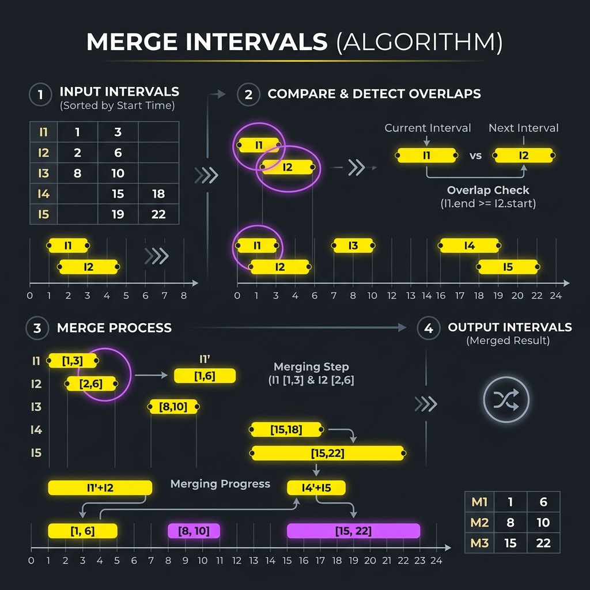

Introduction & Problem Explanation
The Merge Intervals problem asks us to take an array of intervals where intervals[i] = [starti, endi], and merge all overlapping intervals, returning an array of the non-overlapping intervals that cover all the input intervals.
For example, if the input is [[1, 3], [2, 6], [8, 10], [15, 18]]:
- Intervals
[1, 3]and[2, 6]overlap because 2 is less than or equal to 3. We merge them into[1, 6]. - Interval
[8, 10]doesn't overlap with[1, 6]or[15, 18]. - The final output is
[[1, 6], [8, 10], [15, 18]].
O(n2). We can optimize this using a sorting-based greedy approach.

Imagine you manage a conference room. Multiple people have booked slots throughout the day, but some bookings overlap (e.g., Alice booked 1:00 PM to 3:00 PM, and Bob booked 2:00 PM to 4:00 PM). To clean up the master schedule, you write down all bookings on a timeline sorted by their start times. You start with the first booking. If the next booking starts before or exactly when the current booking ends, you merge them into a single continuous block (from 1:00 PM to 4:00 PM). If there is a gap (e.g., the next booking starts at 8:00 PM), you close the current block, save it, and start a new block.
The Algorithmic Approach
Sorting & Greedy Merging (O(n log n) Time, O(n) Space)
The key insight is that sorting the intervals by their start times resolves chronological ambiguity. Here is our approach:
- Sort: We sort the array of intervals based on their start times:
a[0] - b[0]. - Iterate and Merge: We initialize a list for our merged results and keep a reference to a active tracking interval, starting with the first sorted interval.
For each subsequent interval in the sorted array:
- If the current interval's start time is less than or equal to our active interval's end time, they overlap. We merge them by updating the active interval's end time to the maximum of its current end time and the current interval's end time:
active[1] = Math.max(active[1], current[1]). - Otherwise, they do not overlap. We add the active interval to our results list and set the active interval to be the current interval.
- If the current interval's start time is less than or equal to our active interval's end time, they overlap. We merge them by updating the active interval's end time to the maximum of its current end time and the current interval's end time:
- Record Last Interval: After traversing the array, we append the final active interval to our results.
O(n log n), while the merge loop runs in linear O(n) time.
Step-by-Step Execution Walkthrough
Let's trace the algorithm with intervals = [[1, 3], [8, 10], [2, 6], [15, 18]]:
- Step 1 (Sorting): Sort intervals by start time.
- Sorted:
[[1, 3], [2, 6], [8, 10], [15, 18]].
- Sorted:
- Step 2 (Initialize):
- Set
active = [1, 3],result = [].
- Set
- Step 3 (Interval 1: [2, 6]):
- Compare start:
2 <= active.end (3). They overlap! - Merge: Update
active.end = Math.max(3, 6) = 6. - Current active:
[1, 6].
- Compare start:
- Step 4 (Interval 2: [8, 10]):
- Compare start:
8 > active.end (6). No overlap. - Save active: Add
[1, 6]toresult. - Update active:
active = [8, 10]. - Current result:
[[1, 6]].
- Compare start:
- Step 5 (Interval 3: [15, 18]):
- Compare start:
15 > active.end (10). No overlap. - Save active: Add
[8, 10]toresult. - Update active:
active = [15, 18]. - Current result:
[[1, 6], [8, 10]].
- Compare start:
- Step 6 (Loop Finish): Loop ends. Add the final
activeinterval[15, 18]toresult. - Step 7 (Final Output): Return
[[1, 6], [8, 10], [15, 18]].
Key Code Snippets & Explanations
Here is why the main logic in the solution is important:
Arrays.sort(intervals, (a, b) -> Integer.compare(a[0], b[0]));: Sorting simplifies interval traversal by converting a two-dimensional overlap problem into a linear timeline comparison.if (current[1] >= intervals[i][0]): Evaluates if the current interval starts before or exactly at the active interval's boundary, confirming an overlap.current[1] = Math.max(current[1], intervals[i][1]);: Merges the overlapping windows by expanding the active interval to the furthest end time.
Java Implementation Code
Below is the complete, self-contained Java source code that solves this problem. It also includes a main method that traces the execution with console outputs.
package io.practise.dsa;
import java.util.ArrayList;
import java.util.Arrays;
import java.util.List;
public class MergeIntervals {
// Sorting & Greedy Merge: Time O(N log N), Space O(N)
public int[][] merge(int[][] intervals) {
if (intervals == null || intervals.length <= 1) {
return intervals;
}
// Sort intervals based on their start values
Arrays.sort(intervals, (a, b) -> Integer.compare(a[0], b[0]));
List<int[]> mergedList = new ArrayList<>();
int[] activeInterval = intervals[0];
for (int i = 1; i < intervals.length; i++) {
int[] current = intervals[i];
// If current interval overlaps with the active one, merge them
if (activeInterval[1] >= current[0]) {
activeInterval[1] = Math.max(activeInterval[1], current[1]);
} else {
// Otherwise, save the active interval and start tracking the new one
mergedList.add(activeInterval);
activeInterval = current;
}
}
// Add the last active interval
mergedList.add(activeInterval);
return mergedList.toArray(new int[mergedList.size()][]);
}
public static void main(String[] args) {
MergeIntervals solver = new MergeIntervals();
int[][] intervals = {{1, 3}, {2, 6}, {8, 10}, {15, 18}};
System.out.println("--- Merge Intervals Demonstration ---");
System.out.println("Input Intervals: " + Arrays.deepToString(intervals));
int[][] result = solver.merge(intervals);
System.out.println("Merged Intervals: " + Arrays.deepToString(result)); // Expected: [[1, 6], [8, 10], [15, 18]]
}
}
Conclusion
The Merge Intervals problem is a perfect demonstration of using sorting to unlock greedy optimizations. By establishing a guaranteed chronological order, we can merge overlapping segments in a single linear pass.